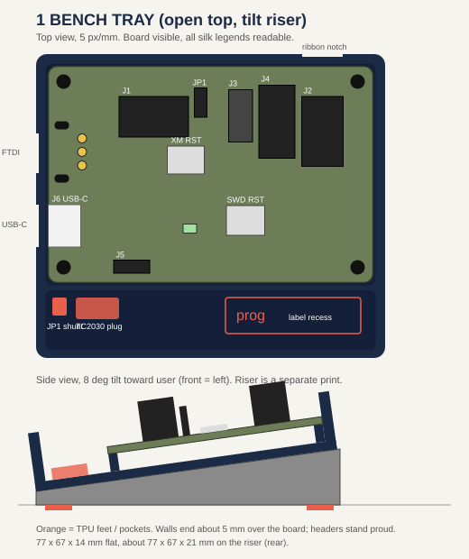
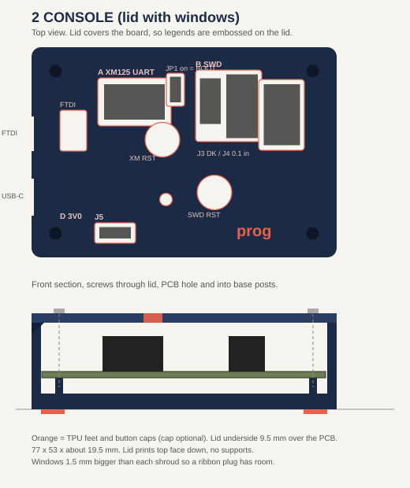
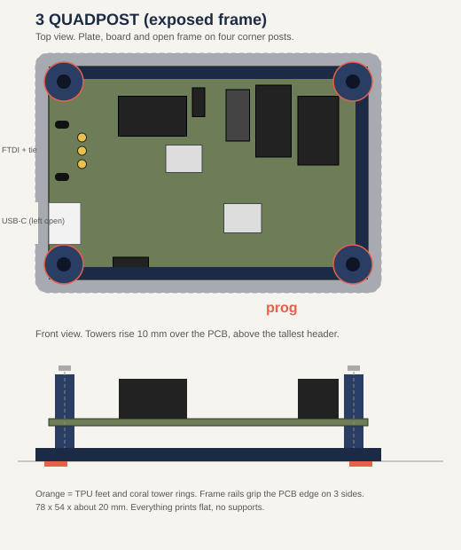

Concepts only, no CAD. Details in concepts.md. Sketches are schematic, positions read from the 2026-11-07 top render (USB-C J6 may shift slightly).

Open-top tray with tilt riser, front storage bay for the JP1 shunt, TC2030 plug and a label.

Lid with windows over each connector. Tidiest and most protective, legends move onto the lid.

Exposed technical sandwich: plate, board, open frame, four corner towers. Quickest print.
| Looks | Fit with bench use | Ease of printing | PCB change needed (5 = none) | |
|---|---|---|---|---|
| Bench Tray | 3 | 5 | 5 | 5 |
| Console | 4 | 3 | 4 | 4 |
| Quadpost | 4 | 3 | 5 | 5 |